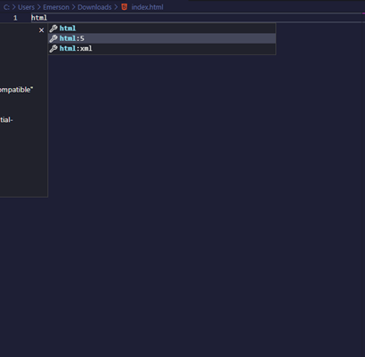

REVISÃO AO DESENVOLVIMENTO WEB
HTML (iniciante)
HYPERTEXT MARKUP LANGUAGE – LINGUAGEM DE MARCAÇÃO DE TEXTO
O HTML é uma for de escrever texto utilizado marcações. Nesse sentido, às diversas marcações existentes formam o elemento fazendo com que o cliente por meio de seu acesso web visualize o texto da forma que fora delimitada.
Ora, não necessariamente o usuário visualizará o delimitador que ali foi utilizado, mas, visualizará a forma em que atribuição deixou.
É importante de destacar que o HTML, literalmente é um texto, o que diferencia a sua exibição perante os outros textos é exatamente a sua extensão .HTML ou HTM, bem como suas marcações escritas em seu texto, afinal, sem essas marcações o texto web ficará puro.
O HTML pode ser escrito por qualquer editor de texto, tal qual o bloco de notas, entretanto, para desenvolvedores, o editor de texto mais comum é o VScode.
A estrutura do documento HTML é de extrema relevância para um bom entendimento nele temos:
- !DOCTYPE HTML - IDENTIFICAÇÃO DA DOCUMENTAÇÃO HTML
- html - Toda a sua estruturação do HTML
- head - fica toda configuração invisível ao usuário quais sejam:
- i) Definição de configuração de caracteres entre o navegador, geralmente utilizado: meta charset="UTF-8" (tag “meta” não precisa de fechamento.
- ii) Definição de título da página com a - title
- body - É aqui que os elementos inseridos serão demonstrados para o usuário, ficando logo abaixo da configuração “head”

É de extrema relevância saber fazer a estruturação, entretanto, caso não esteja habituado, o VScode, ao digitar “html:5” e pressionar a tecla “tab”, faz um autopreenchimento, facilitando e muito a vida dos devs.

REFERÊNCIAS
DEVMEDIA. HTML. Disponível em: https://www.devmedia.com.br/html-basico-codigos-html/16596. Acesso em: 20 dez. 2022.
linkDIO. INTRODUCAO HTML. Disponível em: https://www.dio.me/. Acesso em: 20 dez. 2022.
linkMDN WEB DOCS. HTML: Linguagem de Marcação de Hipertexto. Disponível em: https://developer.mozilla.org/pt-BR/docs/Web/HTML. Acesso em: 20 dez. 2022.
linkW3SCHOOLS. HTML Introduction. Disponível em: https://www.w3schools.com. Acesso em: 20 dez. 2022.
link